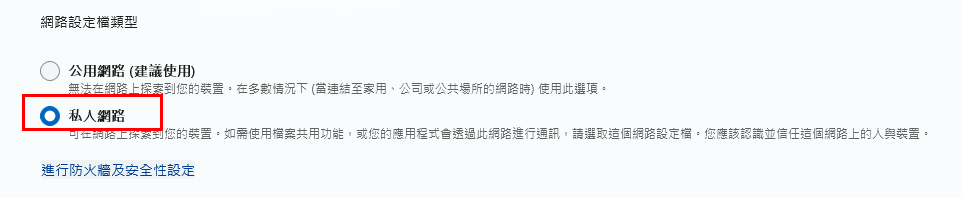
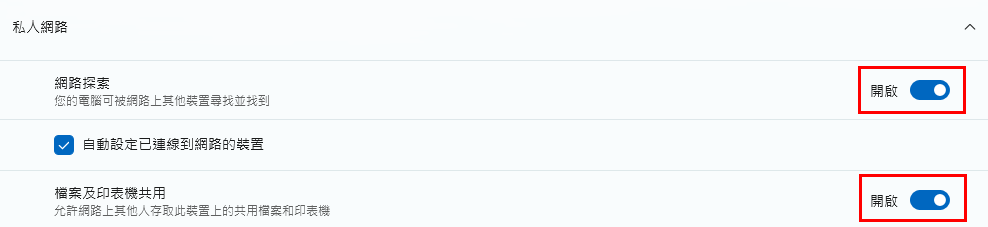
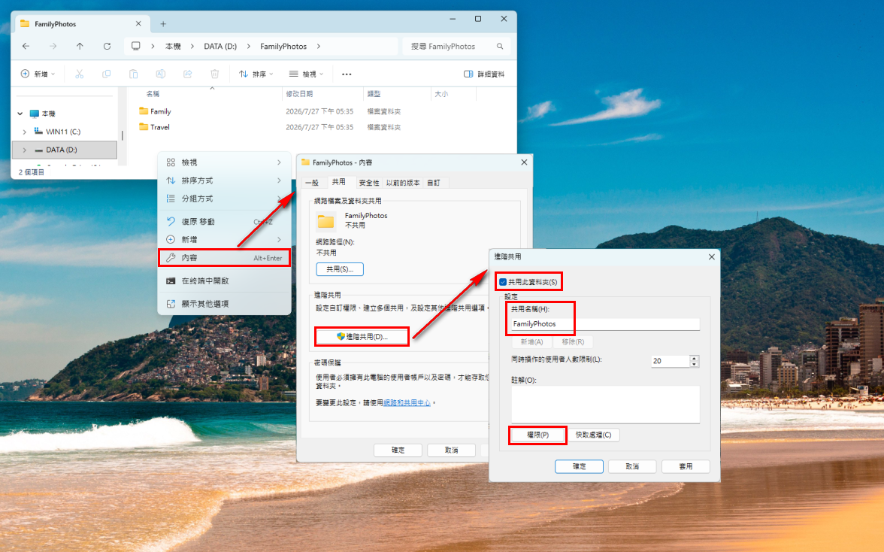
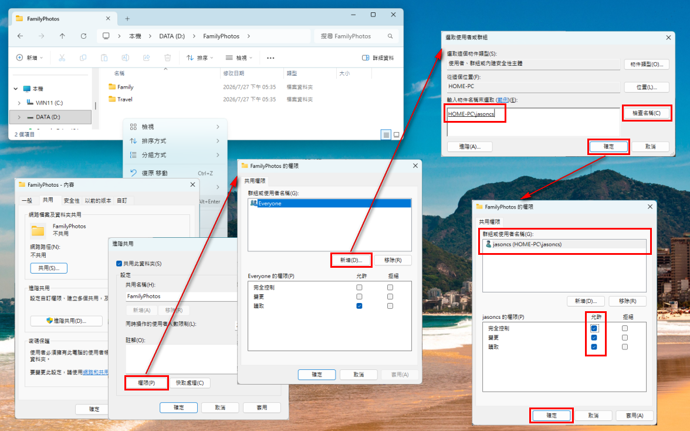
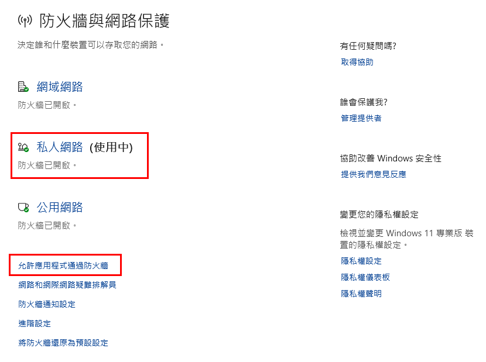
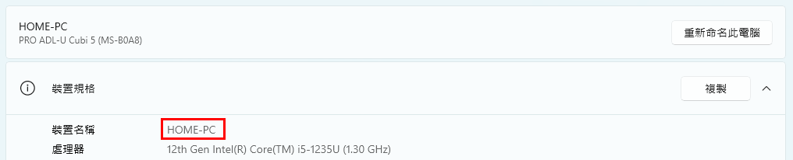
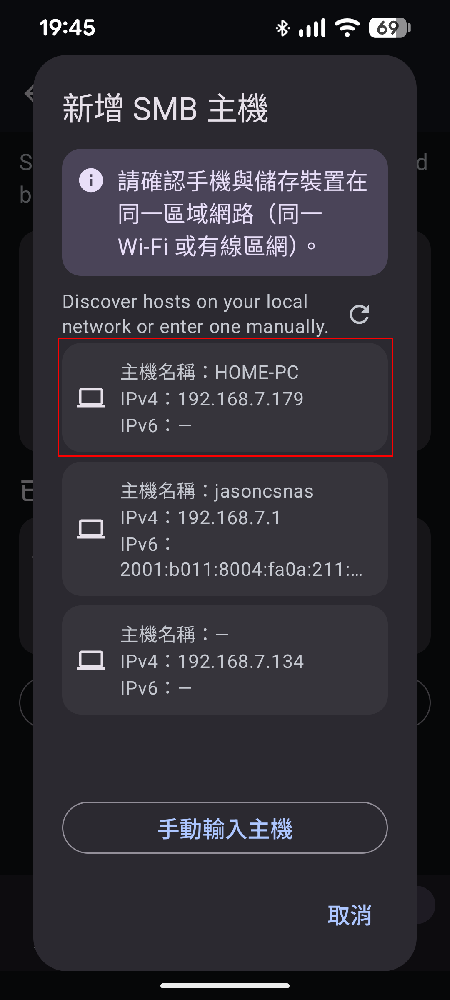
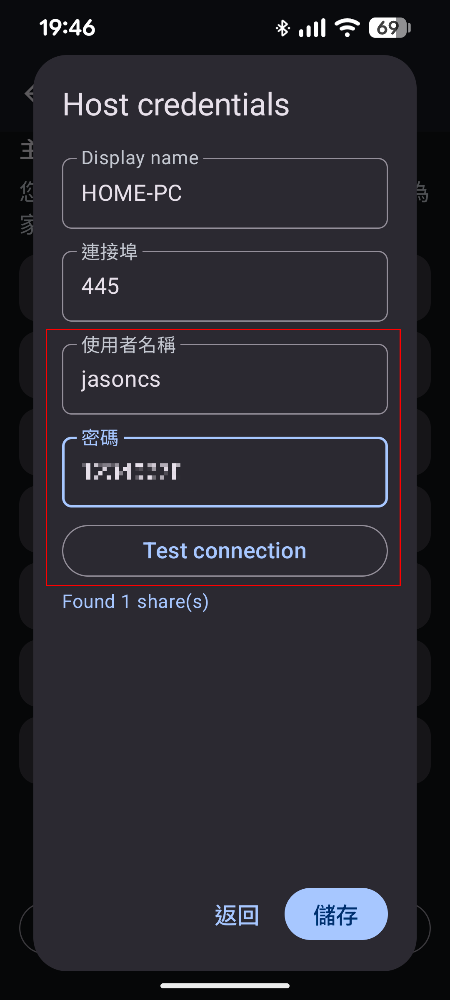
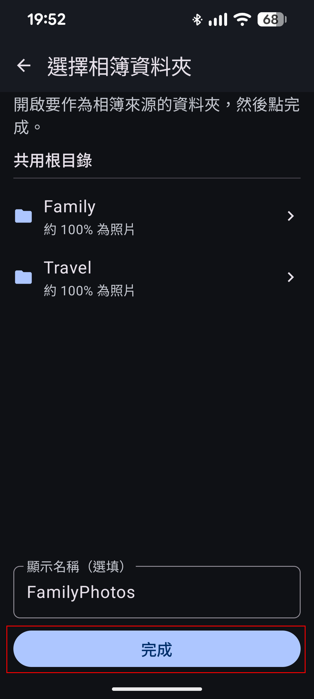

在 Windows 11 開通家中共用
開始前請確認
- 電腦已安裝 Windows 11，並連上家中網路
- 手機與電腦在同一個家中 Wi‑Fi（不要用 5G／客人網路）
- 知道 Windows 使用者名稱與密碼（若只有 PIN，請先在設定 → 帳戶 → 登入選項設定密碼）
- 建議先建專門資料夾，例如
D:\FamilyPhotos（不要共用整個系統碟）
步驟 1：把網路設成「私人」
在「公用」網路上，Windows 常會封鎖檔案共用。
- 開啟 設定 → 網路和網際網路
- 點目前連線的 Wi‑Fi（或乙太網路）
- 點連線名稱 → 網路設定檔類型 選 私人

步驟 2：開啟檔案與印表機共用
- 開啟 設定 → 網路和網際網路 → 進階網路設定
- 點 進階共用設定
- 展開 私人：開啟網路探索、檔案和印表機共用
- 展開 所有網路：建議開啟密碼保護的共用；不要依賴 Guest

步驟 3：建立要共用的資料夾
- 建立資料夾，例如
D:\FamilyPhotos，放入相片／影片 - 在資料夾空白處按右鍵 → 內容 → 共用
- 點 進階共用… → 勾選 共用這個資料夾
- 記住共用名稱（App 會顯示此名稱）→ 點 權限

步驟 4：設定誰可以讀／寫
- 建議移除 Everyone（若有）
- 新增… 你的 Windows 使用者 → 檢查名稱 → 確定
- 建議勾選該使用者的讀取與變更（讀寫）。上傳、移動／複製、編輯存檔、相簿備份都需要寫入；只開「讀取」之後容易操作失敗。若確定手機絕不寫入，才可只勾「讀取」。
- 套用 → 確定

不要把整個 C:\ 或家目錄設成可寫入共用。只共用放照片的那一層。
步驟 5：確認防火牆允許共用
多數情況開啟「檔案和印表機共用」後會自動放行。若 App 找不到電腦：
- 設定 → 隱私權與安全性 → Windows 安全性 → 防火牆與網路保護
- 允許應用程式通過防火牆
- 確認 檔案和印表機共用 在私人網路上有勾選（與 SMB 相關；細項可見 SMB-In）

步驟 6：記下主機名稱與帳密
- 查看裝置名稱：設定搜尋「關於」／「裝置名稱」；或設定 → 系統捲到底 → 關於；或
Win+R→sysdm.cpl - 帳號：本機帳戶名稱，或 Microsoft 帳戶（有時需
MicrosoftAccount\信箱） - 密碼：Windows 登入密碼（不是 PIN）

步驟 7：在 Home Gallery 連線
- 手機連上同一組家中 Wi‑Fi
- Home Gallery → 家中 → 連線家中儲存（或 更多 → 設定 → 主機連線管理 → 新增 SMB 主機）
- 掃描選取電腦（或手動輸入 IP）

- 輸入帳密 → 測試連線 → 儲存

- 選擇共用資料夾 → 再選相片資料夾 → 完成

完成檢查
- 網路設定檔為私人
- 私人網路上已開網路探索與檔案和印表機共用
- 資料夾已進階共用，帳號有讀取＋變更（讀寫）
- 手機與電腦同一 Wi‑Fi；App 可開啟資料夾